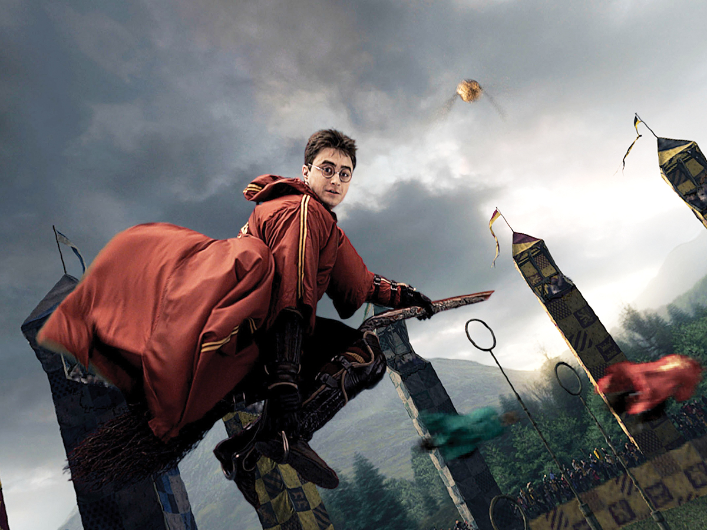
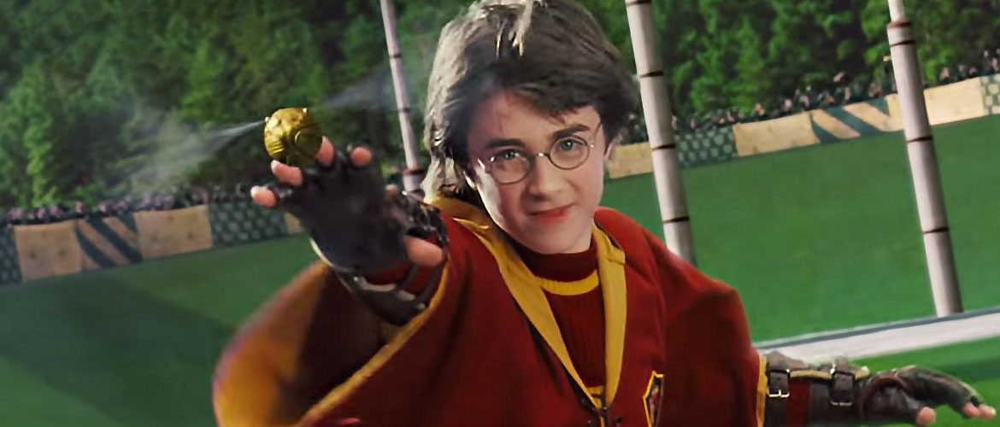
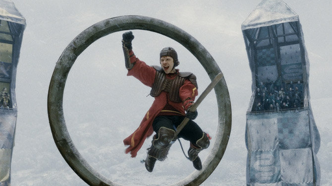

QUIDDITCH

Quidditch is a magical competitive sport involving flying contestants. Matches are played between two teams of seven players riding flying broomsticks, using four balls: a Quaffle, two Bludgers, and a Golden Snitch. Six ring-shaped goals are situated atop poles of different heights, three on each side of the pitch. It is an extremely rough but very popular semi-contact sport, played by wizards and witches. In the wizarding world, Quidditch has a fervent fan following.
Game Progression
Quidditch matches are played over an oval-shaped pitch, with a scoring area at each end consisting of three hooped goal posts, each at a different height. Each team is made up of seven players, consisting of three Chasers, two Beaters, one Keeper and one Seeker. The job of the Chasers is to keep possession of the scarlet Quaffle, a spherical ball passed between players, and attempt to score goals (worth 10 points) by throwing it through one of the opponents' three hoops. These hoops are defended by the opposing team's Keeper, who ideally tries to block their goals. Meanwhile, players of both teams are attacked indiscriminately by the two Bludgers, round, jet black balls made of iron that fly around violently, trying to knock players off their brooms. It is the Beaters' job to defend their teammates from the Bludgers; they carry short wooden clubs, which they use to knock the Bludgers away from their teammates and/or toward the opposing team. Finally, the role of the Seeker is to catch the Golden Snitch, a small golden ball the approximate size of a walnut. The winged Snitch is enchanted to hover, dart, and fly around the pitch, avoiding capture while remaining within the boundaries of the playing area. Catching the Snitch ends the game and scores the successful Seeker's team 150 points.

